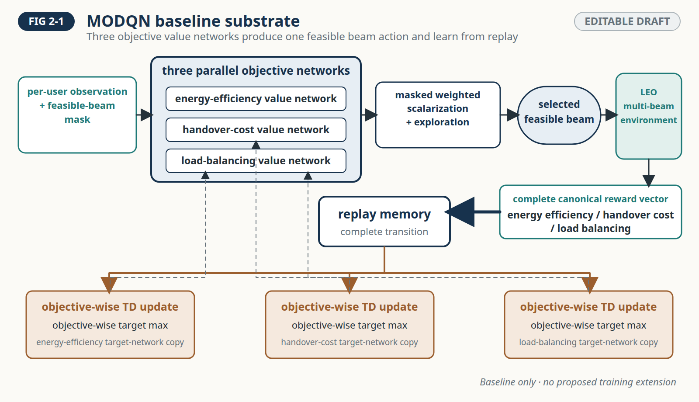
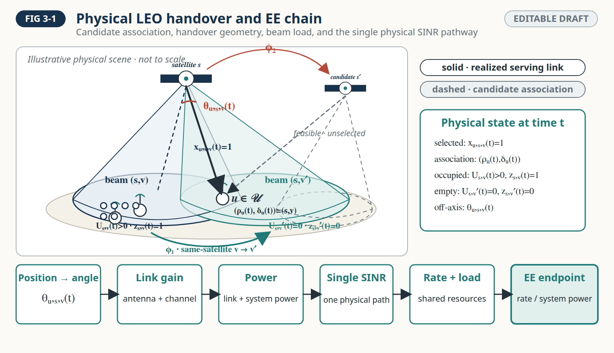
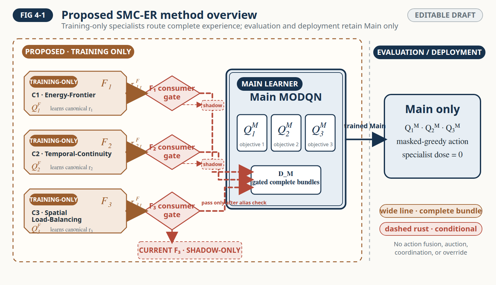
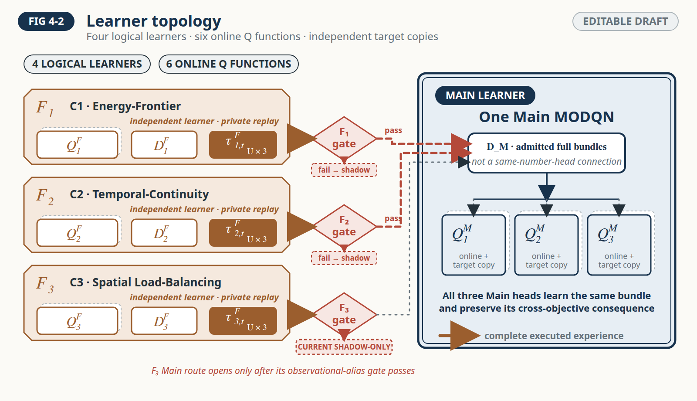
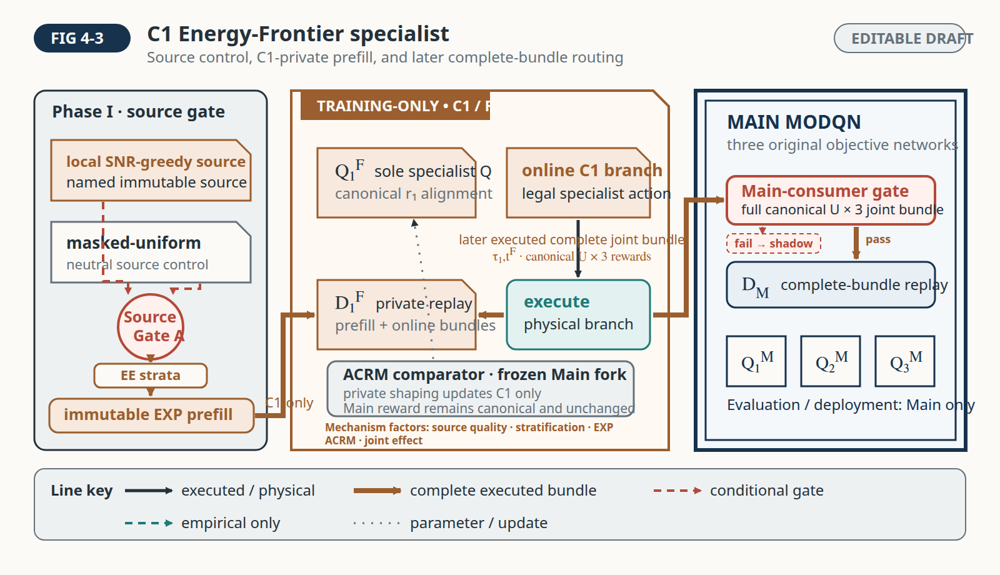
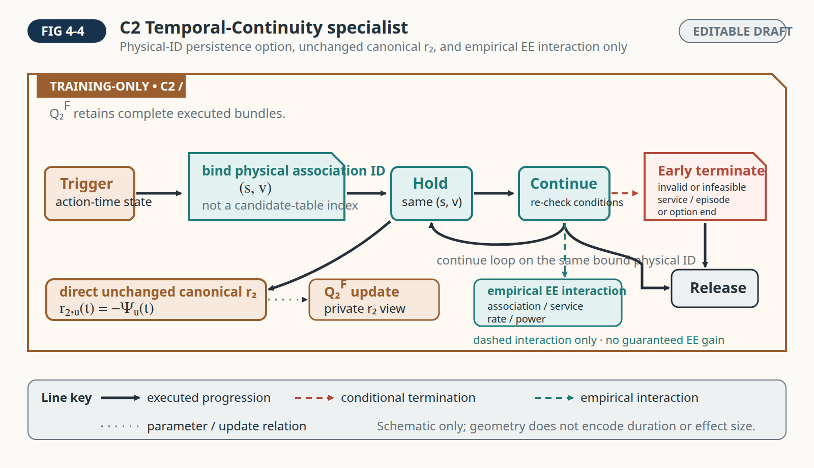
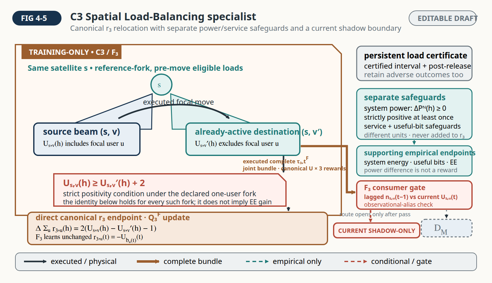
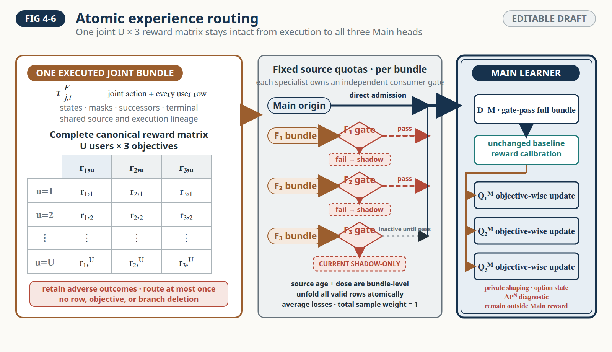
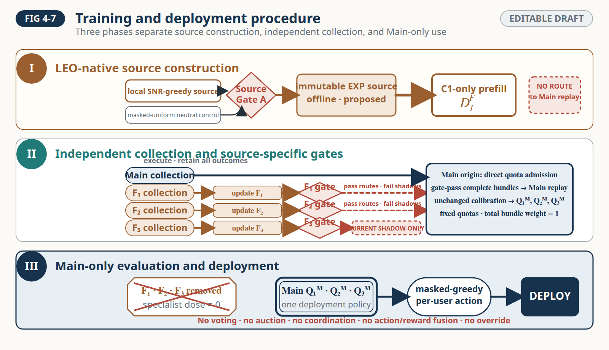

Fig. 2-1 · MODQN baseline substrate
Symbol-light baseline teaching card; no specialist or proposed training mechanism.
Nine editable, non-results manuscript figure drafts. Browser pixels establish renderability and layout evidence only; they do not validate the proposed mechanisms or authorize final manuscript insertion.








